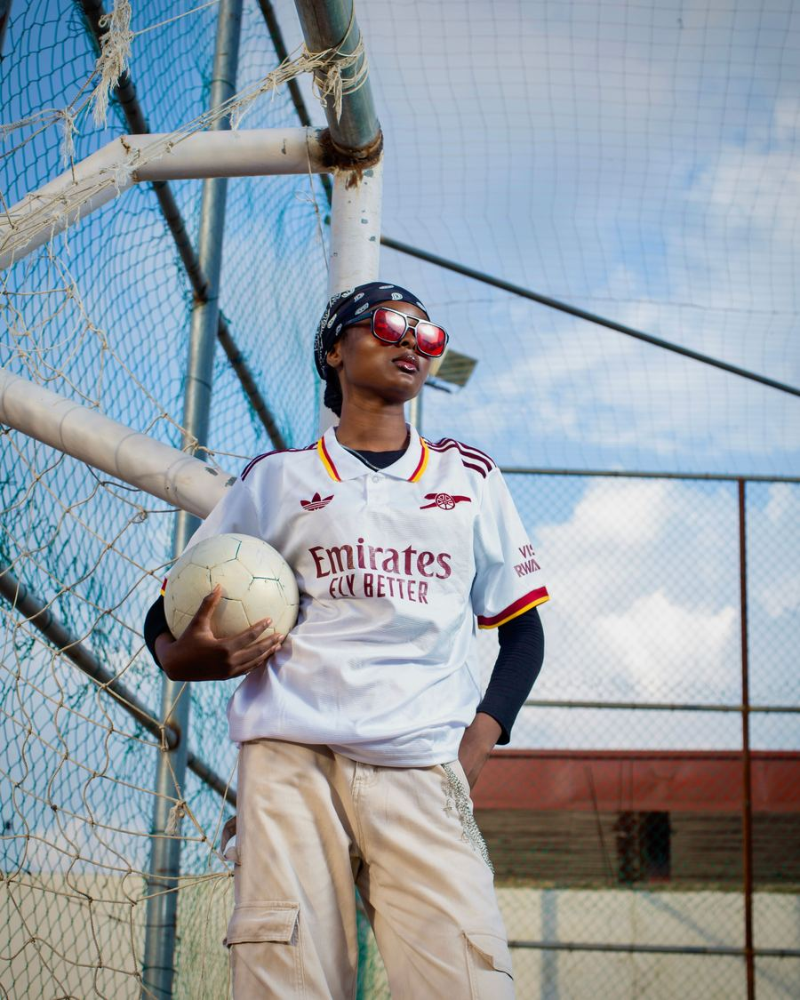

Our Mission
Our mission is to help young football players improve through structured training, coaching and teamwork.

Premier Football Academy is a fictional football academy that helps young players develop their football skills.
The academy was created to provide young football players with an opportunity to improve their skills in a safe and organised environment, with a focus on training, teamwork, discipline and personal development.
Our mission is to help young football players improve through structured training, coaching and teamwork.
Our vision is to become a trusted football academy that helps young players reach their full potential.